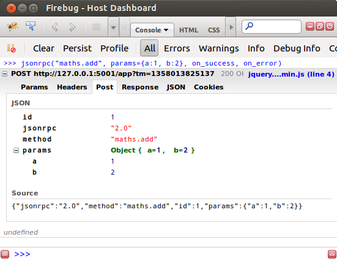
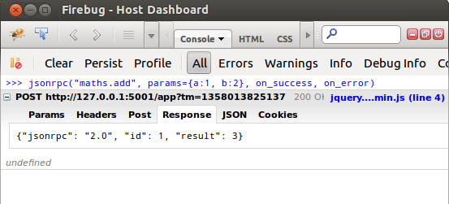

JSON-RPC¶
JSON-RPC protocol has got much less attention than it deserves. It is so elegant and simple. Our experience of working on JSON-RPC was plesant.
For uninitiated JSON-RPC is lightweight remote procedure call protocol similar to XML-RPC. I find it incredibly useful in building easy to maintain applications.
We effectively used JSONRPC in our project Cowoop to make it easy to debug application.
It is often seen that unless it is an open source application, in the design phase very little attention is paid towards maintainablity of the application. With many no so clearly seperated layers it makes it increasingly difficult to debug. This makes bug fixing painful and no fun process for those who are working on it. And further these in most cases are not the architects who designed the application. Architect is either moved on to design some other project or is working on next release.
Lets directly jump to example code. So here is my python function.
>>> def add(a, b):
return a + b
>>> add(1, 2)
3
Project exposes above function add using JSON-RPC. We use Flask + jsonrpc2 to serve JSONRPC over http.
Let us see how does jquery JSONRPC plugin calls this API.
Result
jsonrpc function that you see in above screenshot is part of our js client library. Really it is a a few lines wrapper on top of jquery jsonrpc plugin function jsonRPC.request()
Do you think JSONRPC2 is fairly successful in helping create a maintainable application?
Challenges¶
Authentication¶
There is no word in JSONRPC2 specification about Authentication yet (not a complaint) . But I think it is necessary for further success of JSONRPC. It’s possible to use http auth but not many would prefer it so I see people implementing two type of solutions.
Authentication | Using cookies¶
Session id is kept in authcookie and sent/validated with every http request.
Authentication | Using special parameters in rpc call¶
Session id is passed as special parameter in every rpc call. For eg. above add function may be invoked like below
add(1, 2, _session='somesessionid')